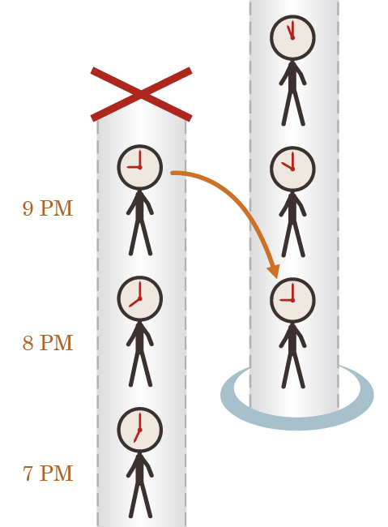
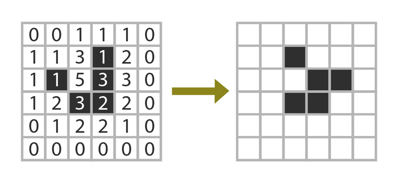
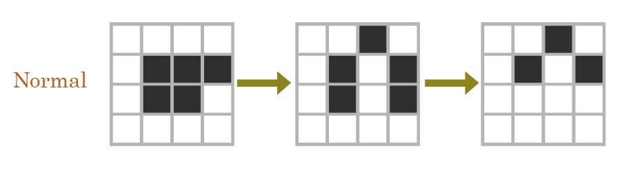
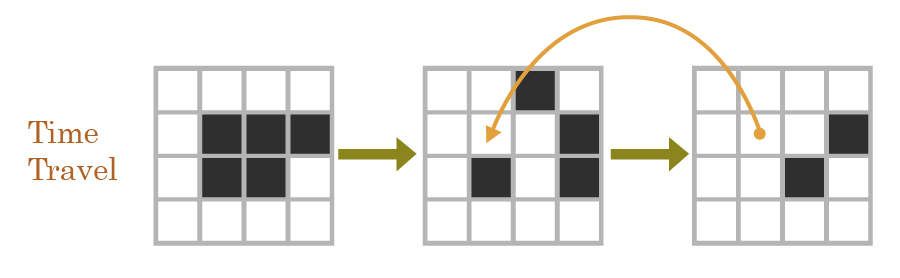
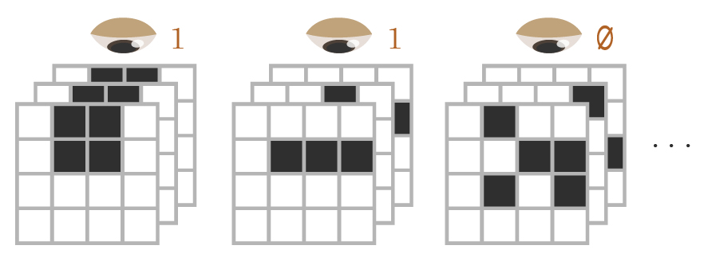
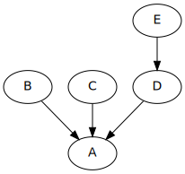
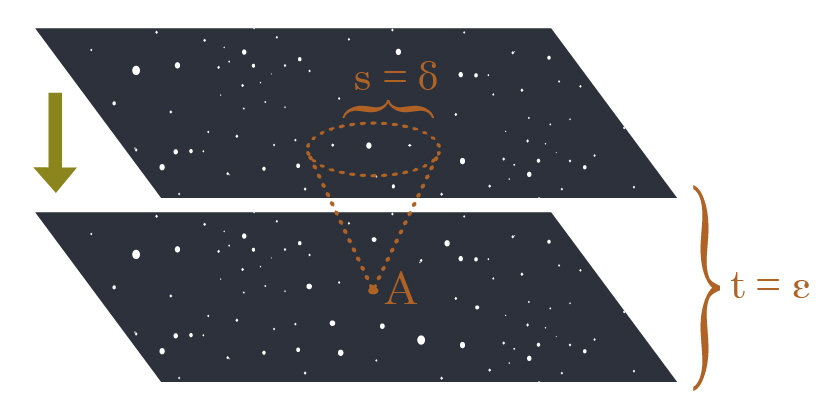
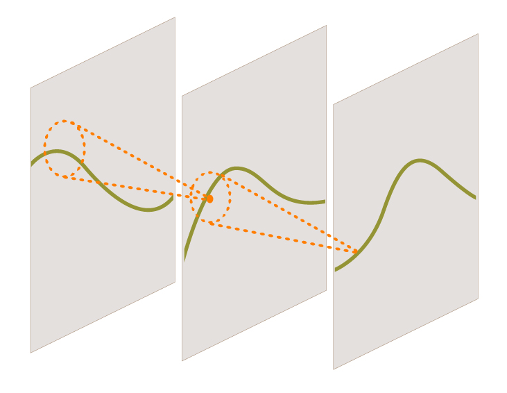

Followup to: Stuff that Makes Stuff Happen [http://lesswrong.com/lw/ezu/stuff_that_makes_stuff_happen/]
Previous meditation [http://lesswrong.com/lw/eva/the_fabric_of_real_things/#7lqj]: Does the idea that everything is made of causes and effects meaningfully constrain experience? Can you coherently say how reality might look, if our universe did not have the kind of structure that appears in a causal model?
I can describe to you at least one famous universe that didn't look like it had causal structure, namely the universe of J. K. Rowling's Harry Potter.
You might think that J. K. Rowling's universe doesn't have causal structure because it contains magic - that wizards wave their wands and cast spells, which doesn't make any sense and goes against all science, so J. K. Rowling's universe isn't 'causal'.
In this you would be completely mistaken [http://lesswrong.com/lw/ezu/stuff_that_makes_stuff_happen/]. The domain of "causality" is just "stuff that makes stuff happen and happens because of other stuff". If Dumbledore waves his wand and therefore a rock floats into the air, that's causality. You don't even have to use words like 'therefore', let alone big fancy phrases like 'causal process', to put something into the lofty-sounding domain of causality. There's causality anywhere there's a noun, a verb, and a subject: 'Dumbledore's wand lifted the rock.' So far as I could tell, there wasn't anything in Lord of the Rings that violated causality.
You might worry that J. K. Rowling had made a continuity error, describing a spell working one way in one book, and a different way in a different book. But we could just suppose that the spell had changed over time. If we actually found ourselves in that apparent universe, and saw a spell have two different effects on two different occasions, we would not conclude that our universe was uncomputable, or that it couldn't be made of causes and effects.
No, the only part of J. K. Rowling's universe that violates 'cause and effect' is...
...the Time-Turners, of course.
A Time-Turner, in Rowling's universe, is a small hourglass necklace that sends you back in time 1 hour each time you spin it. In Rowling's universe, this time-travel doesn't allow for changing history; whatever you do after you go back, it's already happened. The universe containing the time-travel is a stable, self-consistent object.
If a time machine does allow for changing history, it's easy to imagine how to compute it; you could easily write a computer program which would simulate that universe and its time travel, given sufficient computing power. You would store the state of the universe in RAM and simulate it under the programmed 'laws of physics'. Every nanosecond, say, you'd save a copy of the universe's state to disk. When the Time-Changer was activated at 9pm, you'd retrieve the saved state of the universe from one hour ago at 8pm, load it into RAM, and then insert the Time-Changer and its user in the appropriate place. This would, of course, dump the rest of the universe from 9pm into oblivion - no processing would continue onward from that point, which is the same as ending that world and killing everyone in it.[1]

Still, if we don't worry about the ethics or the disk space requirements, then a Time-Changer which can restore and then change the past is easy to compute. There's a perfectly clear order of causality in metatime, in the linear time of the simulating computer, even if there are apparent cycles as seen from within the universe. The person who suddenly appears with a Time-Changer is the causal descendant of the older universe that just got dumped from RAM.
But what if instead, reality is always - somehow - perfectly self-consistent, so that there's apparently only one universe with a future and a past that never changes, so that the person who appears at 8PM has always seemingly descended from the very same universe that then develops by 9PM...?
How would you compute that in one sweep-through, without any higher-order metatime?
What would a causal graph for that look like, when the past descends from its very own future?
And the answer is that there isn't any such causal graph. Causal models are sometimes referred to as DAGs, which stands for Directed Acyclic Graph. If instead there's a directed cycle, there's no obvious order in which to compute the joint probability table. Even if you somehow knew that at 8PM somebody was going to appear with a Time-Turner used at 9PM, you still couldn't compute the exact state of the time-traveller without already knowing the future at 9PM, and you couldn't compute the future without knowing the state at 8PM, and you couldn't compute the state at 8PM without knowing the state of the time-traveller who just arrived.
In a causal model, you can compute p(9pm|8pm) and p(8pm|7pm) and it all starts with your unconditional knowledge of p(7pm) or perhaps the Big Bang, but with a Time-Turner we have p(9pm|8pm) and p(8pm|9pm) and we can't untangle them - multiplying those two conditional matrices together would just yield nonsense.
Does this mean that the Time-Turner is beyond all logic and reason?
Complete philosophical panic is basically never justified. We should even be reluctant to say anything like, "The so-called Time-Turner is beyond coherent description; we only think we can imagine it, but really we're just talking nonsense; so we can conclude a priori that no such Time-Turner that can exist; in fact, there isn't even a meaningful thing that we've just proven can't exist." This is also panic - it's just been made to sound more dignified. The first rule of science is to accept your experimental results, and generalize based on what you see. What if we actually did find a Time-Turner that seemed to work like that? We'd just have to accept that Causality As We Previously Knew It had gone out the window, and try to make the best of that.
In fact, despite the somewhat-justified conceptual panic which the protagonist of Harry Potter and the Methods of Rationality undergoes upon seeing a Time-Turner, a universe like that can have a straightforward logical description even if it has no causal description.
Conway's Game of Life [http://en.wikipedia.org/wiki/Conway's_Game_of_Life] is a very simple specification of a causal universe; what we would today call a cellular automaton. The Game of Life takes place on a two-dimensional square grid, so that each cell is surrounded by eight others, and the Laws of Physics are as follows:
- A cell with 2 living neighbors during the last tick, retains its state from the last tick.
- A cell with 3 living neighbors during the last tick, will be alive during the next tick.
- A cell with fewer than 2 or more than 3 living neighbors during the last tick, will be dead during the next tick.

It is my considered opinion that everyone should play around with Conway's Game of Life at some point in their lives, in order to comprehend the notion of 'laws of physics'. Playing around with Life as a kid (on a Mac Plus) helped me gut-level-understand the concept of a 'lawful universe' developing under exceptionless rules.

Now suppose we modify the Game of Life universe by adding some prespecified cases of time travel - places where a cell will descend from neighbors in the future, instead of the past.
In particular we shall take a 4x4 Life grid, and arbitrarily hack Conway's rules to say:
-
On the 2nd tick, the cell at (2,2) will have its state determined by that cell's state on the 3rd tick, instead of its neighbors on the 1st tick.


It's no longer possible to compute the state of each cell at each time in a causal order where we start from known cells and compute their not-yet-known causal descendants. The state of the cells on the 3rd tick, depend on the state of the cells on the 2nd tick, which depends on the state on the 3rd tick.
In fact, the time-travel rule, on the same initial conditions, also permits a live cell to travel back in time, not just a dead cell - this just gives us the "normal" grid! Since you can't compute things in order of cause and effect, even though each local rule is deterministic, the global outcome is not determined.
However, you could simulate Life with time travel merely by brute-force searching through all possible Life-histories, discarding all histories which disobeyed the laws of Life + time travel. If the entire universe were a 4-by-4 grid, it would take 16 bits to specify a single slice through Time - the universe's state during a single clock tick. If the whole of Time was only 3 ticks long, there would be only 48 bits making up a candidate 'history of the universe' - it would only take 48 bits to completely specify a History of Time. 2^48 is just 281,474,976,710,656, so with a cluster of 2GHz CPUs it would be quite practical to find, for this rather tiny universe, the set of all possible histories that obey the logical relations of time travel.
It would no longer be possible to point to a particular cell in a particular history and say, "This is why it has the 'alive' state on tick 3". There's no "reason" - in the framework of causal reasons - why the time-traveling cell is 'dead' rather than 'alive', in the history we showed. (Well, except that Alex, in the real universe, happened to pick it out when I asked him to generate an example.) But you could, in principle, find out what the set of permitted histories for a large digital universe, given lots and lots of computing power.
Here's an interesting question I do not know how to answer: Suppose we had a more complicated set of cellular automaton rules, on a vastly larger grid, such that the cellular automaton was large enough, and supported enough complexity, to permit people to exist inside it and be computed. Presumably, if we computed out cell states in the ordinary way, each future following from its immediate past, the people inside it would be as real as we humans computed under our own universe's causal physics.
Now suppose that instead of computing the cellular automaton causally, we hack the rules of the automaton to add large time-travel loops - change their physics to allow Time-Turners - and with an unreasonably large computer, the size of two to the power of the number of bits comprising an entire history of the cellular automaton, we enumerate all possible candidates for a universe-history.
So far, we've just generated all 2^N possible bitstrings of size N, for some large N; nothing more. You wouldn't expect this procedure to generate any people or make any experiences real, unless enumerating all finite strings of size N causes all lawless universes encoded in them to be real. There's no causality there, no computation, no law relating one time-slice of a universe to the next...
Now we set the computer to look over this entire set of candidates, and mark with a 1 those that obey the modified relations of the time-traveling cellular automaton, and mark with a 0 those that don't.

If N is large enough - if the size of the possible universe and its duration is large enough - there would be descriptions of universes which experienced natural selection, evolution, perhaps the evolution of intelligence, and of course, time travel with self-consistent Time-Turners, obeying the modified relations of the cellular automaton. And the checker would mark those descriptions with a 1, and all others with a 0.
Suppose we pick out one of the histories marked with a 1 and look at it. It seems to contain a description of people who remember experiencing time travel.
Now, were their experiences real? Did we make them real by marking them with a 1 - by applying the logical filter using a causal computer? Even though there was no way of computing future events from past events; even though their universe isn't a causal universe; even though they will have had experiences that literally were not 'caused', that did not have any causal graph behind them, within the framework of their own universe and its rules?
I don't know. But...
Our own universe does not appear to have Time-Turners, and does appear to have strictly local causality in which each variable can be computed strictly forward-in-time.
And I don't know why that's the case; but it's a likely-looking hint for anyone wondering what sort of universes can be real in the first place.
The collection of hypothetical mathematical thingies that can be described logically (in terms of relational rules with consistent solutions) looks vastly larger than the collection of causal universes with locally determined, acyclically ordered events. Most mathematical objects aren't like that. When you say, "We live in a causal universe", a universe that can be computed in-order using local and directional rules of determination, you're vastly narrowing down the possibilities relative to all of Math-space.
So it's rather suggestive that we find ourselves in a causal universe rather than a logical universe - it suggests that not all mathematical objects can be real, and the sort of thingies that can be real and have people in them are constrained to somewhere in the vicinity of 'causal universes'. That you can't have consciousness without computing an agent made of causes and effects, or maybe something can't be real at all unless it's a fabric of cause and effect. It suggests that if there is a Tegmark Level IV multiverse, it isn't "all logical universes" but "all causal universes".
Of course you also have to be a bit careful when you start assuming things like "Only causal things can be real" because it's so easy for Reality to come back at you and shout "WRONG!" Suppose you thought reality had to be a discrete causal graph, with a finite number of nodes and discrete descendants, exactly like Pearl-standard causal models [http://lesswrong.com/lw/ev3/causal_diagrams_and_causal_models/]. There would be no hypothesis in your hypothesis-space to describe the standard model of physics, where space is continuous, indefinitely divisible, and has complex amplitude assignments over uncountable cardinalities of points.
Reality is primary, saith the wise old masters of science. The first rule of science is just to go with what you see, and try to understand it; rather than standing on your assumptions, and trying to argue with reality.
But even so, it's interesting that the pure, ideal structure of causal models, invented by statisticians to reify the idea of 'causality' as simply as possible, looks much more like the modern view of physics than does the old Newtonian ideal.
If you believed in Newtonian billiard balls bouncing around, and somebody asked you what sort of things can be real, you'd probably start talking about 'objects', like the billiard balls, and 'properties' of the objects, like their location and velocity, and how the location 'changes' between one 'time' and another, and so on.
But suppose you'd never heard of atoms or velocities or this 'time' stuff - just the causal diagrams and causal models [http://lesswrong.com/lw/ev3/causal_diagrams_and_causal_models/] invented by statisticians to represent the simplest possible cases of cause and effect. Like this:

And then someone says to you, "Invent a continuous analogue of this."
You wouldn't invent billiard balls. There's no billiard balls in a causal diagram.
You wouldn't invent a single time sweeping through the universe. There's no sweeping time in a causal diagram.
You'd stare a bit at B, C, and D which are the sole nodes determining A, screening off the rest of the graph, and say to yourself:
"Okay, how can I invent a continuous analogue of there being three nodes that screen off the rest of the graph? How do I do that with a continuous neighborhood of points, instead of three nodes?"
You'd stare at E determining D determining A, and ask yourself:
"How can I invent a continuous analogue of 'determination', so that instead of E determining D determinining A, there's a continuum of determined points between E and A?"
If you generalized in a certain simple and obvious fashion...
The continuum of relatedness from B to C to D would be what we call space.
The continuum of determination from E to D to A would be what we call time.
There would be a rule stating that for epsilon time before A, there's a neighborhood of spatial points delta which screens off the rest of the universe from being relevant to A (so long as no descendants of A are observed); and that epsilon and delta can both get arbitrarily close to zero.

There might be - if you were just picking the simplest rules you could manage - a physical constant which related the metric of relatedness (space) to the metric of determination (time) and so enforced a simple continuous analogue of local causality...
...in our universe, we call it c, the speed of light.
And it's worth remembering that Isaac Newton did not expect that rule to be there.
If we just stuck with Special Relativity, and didn't get any more modern than that, there would still be little billiard balls like electrons, occupying some particular point in that neighborhood of space.
But if your little neighborhoods of space have billiard balls with velocities, many of which are slower than lightspeed... well, that doesn't look like the simplest continuous analogues of a causal diagram, does it?
When we make the first quantum leap and describe particles as waves, we find that the billiard balls have been eliminated. There's no 'particles' with a single point position and a velocity slower than light. There's an electron field, and waves propagate through the electron field through points interacting only with locally neighboring points. If a particular electron seems to be moving slower than light, that's just because - even though causality always propagates at exactly c between points within the electron field - the crest of the electron wave can appear to move slower than that. A billiard ball moving through space over time, has been replaced by a set of points with values determined by their immediate historical neighborhood.
vs.

And when we make the second quantum leap into configuration space, we find a timeless universal wavefunction with complex amplitudes assigned over the points in that configuration space, and the amplitude of every point causally determined by its immediate neighborhood in the configuration space [http://lesswrong.com/lw/qq/timeless_beauty/].[2]
So, yes, Reality can poke you in the nose if you decide that only discrete causal graphs can be real, or something silly like that.
But on the other hand, taking advice from the math of causality wouldn't always lead you astray. Modern physics looks a heck of a lot more similar to "Let's build a continuous analogue of the simplest diagrams statisticians invented to describe theoretical causality", than like anything Newton or Aristotle imagined by looking at the apparent world of boulders and planets.
I don't know what it means... but perhaps we shouldn't ignore the hint we received by virtue of finding ourselves inside the narrow space of "causal universes" - rather than the much wider space "all logical universes" - when it comes to guessing what sort of thingies can be real. To the extent we allow non-causal universes in our hypothesis space, there's a strong chance that we are broadening our imagination beyond what can really be real under the Actual Rules - whatever they are! (It is possible to broaden your metaphysics too much, as well as too little. For example, you could allow logical contradictions into your hypothesis space - collections of axioms with no models - and ask whether we lived in one of those.)
If we trusted absolutely that only causal universes could be real, then it would be safe to allow only causal universes into our hypothesis space, and assign probability literally zero to everything else.
But if you were scared of being wrong, then assigning probability literally zero means you can't change your mind, ever, even if Professor McGonagall shows up with a Time-Turner tomorrow.
Meditation [http://lesswrong.com/lw/fok/causal_universes/#7wul]: Suppose you needed to assign non-zero probability to any way things could conceivably turn out to be, given humanity's rather young and confused state - enumerate all the hypotheses a superintelligent AI should ever be able to arrive at, based on any sort of strange world it might find by observation of Time-Turners or stranger things. How would you enumerate the hypothesis space of all the worlds we could remotely maybe possibly be living in, including worlds with hypercomputers and Stable Time Loops and even stranger features?
Mainstream status [http://lesswrong.com/lw/fok/causal_universes/#7wum].
[1] Sometimes I still marvel about how in most time-travel stories nobody thinks of this. I guess it really is true that only people who are sensitized to 'thinking about existential risk' even notice when a world ends, or when billions of people are extinguished and replaced by slightly different versions of themselves. But then almost nobody will notice that sort of thing inside their fiction if the characters all act like it's okay [http://yudkowsky.net/other/fiction/the-sword-of-good].)
[2] Unless you believe in 'collapse [http://lesswrong.com/lw/q6/collapse_postulates/]' interpretations of quantum mechanics [http://lesswrong.com/lw/r5/the_quantum_physics_sequence/] where Bell's Theorem [http://lesswrong.com/lw/q1/bells_theorem_no_epr_reality/] mathematically requires that either your causal models [http://lesswrong.com/lw/ev3/causal_diagrams_and_causal_models/] don't obey the Markov condition [http://lesswrong.com/lw/ezu/stuff_that_makes_stuff_happen/] or they have faster-than-light nonlocal influences [http://lesswrong.com/lw/q2/spooky_action_at_a_distance_the_nocommunication/]. (Despite a large literature of obscurantist verbal words intended to obscure this fact, as generated and consumed by physicists who don't know about formal definitions of causality or the Markov condition.) If you believe in a collapse postulate [http://lesswrong.com/lw/q7/if_manyworlds_had_come_first/], this whole post goes out the window. But frankly, if you believe that, you are bad and you should feel bad.
Part of the sequence Highly Advanced Epistemology 101 for Beginners [http://wiki.lesswrong.com/wiki/Highly_Advanced_Epistemology_101_for_Beginners]
Next post: "Mixed Reference: The Great Reductionist Project [http://lesswrong.com/lw/frz/mixed_reference_the_great_reductionist_project/]"
Previous post: "Logical Pinpointing [http://lesswrong.com/lw/f4e/logical_pinpointing/]"